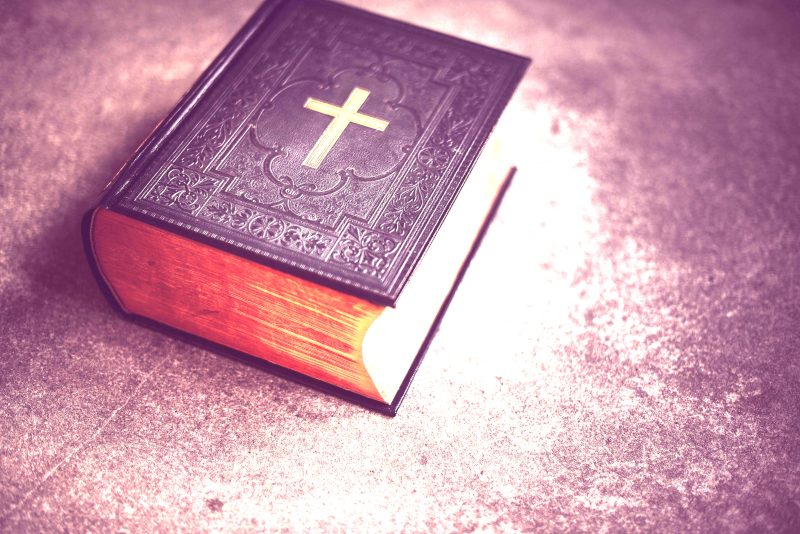

Nuestras Creencias

Nuestra Posición Doctrinal:
Las Escrituras
Creemos que la Biblia es la Palabra de Dios, inspirada completa y verbalmente por Dios. Creemos que las Escrituras son la Palabra infalible de Dios, tal como se encuentra en los 66 libros desde el Génesis hasta el Apocalipsis. Creemos que Dios no solo inspiró cada palabra, sino que las ha preservado a través de los siglos. Creemos que la versión Reina Valera es la Palabra de Dios preservada para las personas de habla español y es la única traducción aceptable que se utiliza en esta iglesia. (Salmo 12: 6–7; 2 Timoteo 3: 15-17; 1 Pedro 1: 23-25; 2 Pedro 1: 19-21)
Dios
Creemos en un solo Dios; Quien es eterno, autoexistente, infinito e inmutable. Creemos que Él tiene una naturaleza, una esencia y una sustancia; sin embargo, se manifiesta al hombre en tres personas: el Padre, el Hijo y el Espíritu Santo. (Deuteronomio 6: 4; 1 Timoteo 1:17; Santiago 1:17; 1 Juan 4: 4)
Jesucristo
Creemos que Jesucristo es el único Salvador de la humanidad. Creemos que Jesucristo es eternamente Dios y posee todos los atributos de la Deidad. Creemos que el Señor Jesucristo nació de una virgen, que fue Dios encarnado, y que los propósitos de la encarnación eran revelar a Dios, redimir a los hombres y gobernar el reino de Dios. Creemos que Jesucristo nunca renunció a ningún atributo de Su Deidad, sino que simplemente los ocultó. Creemos que Él vivió una vida perfecta, sin pecado, al final de la cual fue ofrecido por toda la humanidad como un sacrificio de sustitución por el pecado del hombre. Este sacrificio fue un pago justo a Dios por el perdón del pecado. Fue activado por Su muerte a través del derramamiento de Su sangre en la cruz y fue aceptado por Dios en Su resurrección. Creemos que Él ascendió al Cielo después de Su resurrección para sentarse a la diestra del Padre y ahora está esperando el momento de recibir a Su iglesia en el rapto, que es seguido por Su regreso siete años después a la tierra para gobernar y reinar como Rey por 1.000 años. (Salmo 2: 7-9; Isaías 7:14, 9: 6, 43:11; Miqueas 5: 2; Mateo 1:25; Lucas 1: 26-35; Juan 1: 1, 1: 3, 14, 18 , 29; Romanos 3: 19-25; Romanos 5: 6-15; Filipenses 2: 5-11; 1 Tesalonicenses 4: 13-18; 1 Timoteo 2: 5; 1 Timoteo 3:16; Tito 2: 10-15 Hebreos 7:26, 9: 24-28; 1 Pedro 1:19, 2: 2; 1 Juan 1: 3; Apocalipsis 20: 1-6)
El Espíritu Santo
Creemos que el Espíritu Santo de Dios es una persona que tiene personalidad y todos los atributos de la Deidad. Creemos que el Espíritu Santo siempre ha estado involucrado en los asuntos de la humanidad; sin embargo, creemos que Él tiene un ministerio especial que comenzó en Pentecostés y continuará hasta el rapto. Este ministerio incluye reprobar el mundo del pecado, la justicia y el juicio. El Espíritu Santo también fue enviado para regenerar, santificar, sellar y llenar a todos los que han depositado su fe en Jesucristo. (Génesis 1: 2; Juan 3: 5-6; Juan 14:16; Hechos 1: 5; Hechos 11:15; 1 Corintios 3:16; 1 Corintios 6: 19-20; 1 Corintios 12:13)
Pecado y Salvación
Creemos que todos los hombres nacieron con una naturaleza de pecado heredada recibida de nuestro antepasado común, Adán. Creemos que debido a su naturaleza, el hombre es un pecador por elección, y es totalmente incapaz de reformarse a sí mismo o de abandonar su pecado por su propio poder. Creemos que la única esperanza de liberación para el hombre es un cambio total de mentalidad con respecto a su condición pecaminosa y su incapacidad para cambiarlo, y un cambio hacia Jesucristo como el único Salvador. Creemos que solo a través del sacrificio de sustitución de Cristo en la cruz puede un hombre ser liberado de su pecado. Creemos que todos los que rechazan a Jesucristo como su Salvador ya están condenados a una eternidad en el lago de fuego. (Génesis 5: 1-5; Hechos 4:19; Hechos 16:31; Romanos 3: 10-23; Romanos 5: 6-12; Romanos 6:23; Romanos 10: 9-10; Efesios 2: 8-9 Tito 3: 5-6; Revelación 20: 11-14)
La Iglesia Nueva Testamentaria
Creemos que la iglesia comenzó con el llamado de Jesucristo a los doce apóstoles y se fortaleció en el día de Pentecostés. Creemos que la iglesia local está compuesta por miembros que han sido salvos y bautizados de acuerdo con el mandato de Cristo y se han unido voluntariamente para los propósitos de adoración, comunión, servicio y observancia de las ordenanzas del bautismo y la comunión. Creemos que todos los verdaderos creyentes serán absorbidos en el rapto, justo antes de la tribulación. (Mateo 16: 16-18; Hechos 1:15; Hechos 2: 41-43; Hechos 11:15; Hechos 20:28; 1 Corintios 15: 51-58; Efesios 1: 12-14; Efesios 5: 25- 30; 1 Tesalonicenses 4: 13-18; 1 Timoteo 3: 4-15)
Como ser salvo:
1. Reconozca que usted es un pecador.
“Como está escrito: No hay justo, ni aun uno; no hay quien entienda, no hay quien busque a Dios. Todos se desviaron, a una se hicieron inútiles; No hay quien haga lo bueno, no hay ni siquiera uno.”
-Romanos 3:10-12
2. Reconoza que hay un precio por su pecado.
“por cuanto todos pecaron, y están destituidos de la gloria de Dios.”
-Romanos 3:23
“Porque la paga del pecado es muerte…”
-Romanos 6:23
3. Reconozca que solo Cristo puede perdonarle y salvarle.
“Mas Dios muestra su amor para con nosotros, en que siendo aún pecadores, Cristo murió por nosotros.”
-Romanos 5:8
4. Crea y reciba a Cristo como su único y suficiente salvador.
“…mas la dádiva de Dios es vida eterna en Cristo Jesús Señor nuestro.” Romanos 10:13 “Porque todo aquel que invocare el nombre del Señor, será salvo.”
-Romanos 6:23
Si usted desea tomar la decisión de pedirle al Señor que entre en su corazón, haga esta oracion:
Señor Jesucristo, reconozco que soy pecador. Perdone mis pecados. Jesús, entre en mi corazón y salve mi alma del infierno. Pongo mi confianza solamente en usted, lléveme al cielo cuando muera. Se lo pido en el nombre de Cristo Jesús.
¡Amen!